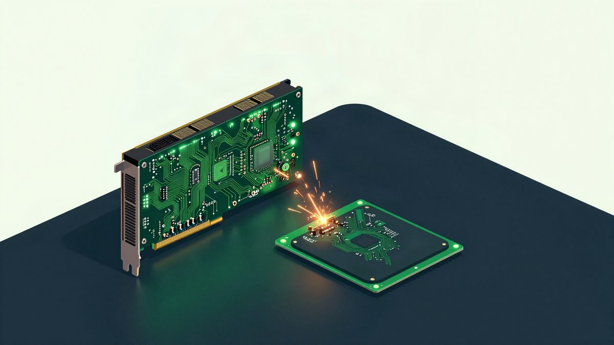

Nvidia GeForce driveri navodno bez prestanka pišu na SSD, do 30 GB na sat i kad računalo miruje

Korisnici GeForce kartica prijavljuju da Nvidijini driveri 621.14 i 621.24 stalno prepisuju log datoteku na SSD-u, čak i dok računalo miruje, i to do 30 GB na sat. Nvidia za sada nije priznala problem ni izdala ispravak, a nekim korisnicima pomaže povratak na stariji driver 621.01.
Korisnici Nvidia GeForce grafičkih kartica prijavljuju da noviji driveri stalno pišu podatke na SSD, i kad računalo miruje. Prema njihovim mjerenjima, to može doseći i do 30 GB na sat. Nvidia problem za sada nije priznala niti je objavila ispravak.
Kao mogući uzrok navodi se proces NVDisplay.Container.exe, dio servisa Nvidia Display Container LS, koji je potreban za rad Nvidia Control Panela i aplikacije Nvidia App. Prema opažanjima korisnika, proces stalno prepisuje log datoteku nvlog.nvlgstg umjesto da joj, kao inače, dodaje nove zapise.
Što su korisnici izmjerili
Prve prijave pojavile su se nakon izlaska drivera GeForce 621.14 od 4. studenoga. Jedan korisnik zabilježio je oko 515 MB zapisa u pet minuta dok je računalo mirovalo, što je otprilike 3 GB na sat. Drugi korisnik javlja da je s driverom 621.24, objavljenim 12. studenoga, količina zapisa dosegla oko 30 GB na sat.
Koliko to opterećuje SSD
Takvo pisanje ubrzava trošenje SSD-a. Kao primjer: SSD od 1 TB s deklariranom izdržljivošću od oko 600 TB zapisanih podataka uz 3 GB na sat i računalo koje stalno radi teoretski bi dobio oko 28 TB zapisa godišnje. Uz 30 GB na sat i osam sati rada dnevno brojka bi se mogla približiti 88 TB godišnje. To su procjene izračunate iz korisničkih mjerenja, a ne službeni podaci.
Privremena rješenja
Nekim korisnicima pomogao je povratak na driver 621.01. Aktivnost pisanja može se privremeno smanjiti zaustavljanjem servisa Nvidia Display Container LS i brisanjem problematične log datoteke, ali nakon ponovnog pokretanja servisa datoteka opet može početi rasti.
Servis se ne preporučuje trajno isključiti, jer bi Nvidia Control Panel i druge aplikacije tada prestali normalno raditi.
Nvidia taj bug ne navodi ni u popisu poznatih problema drivera 621.24. Sličan problem nedavno je pronađen i u driverima AMD Radeon, a AMD je za svoje kartice već izdao ispravak.
Izvor: iXBT